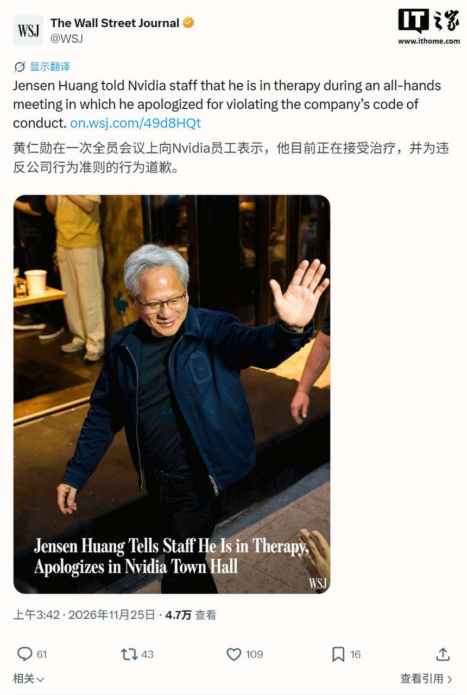
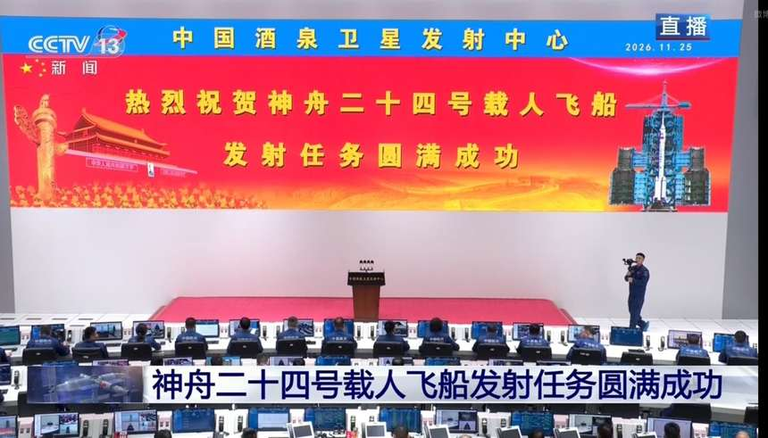
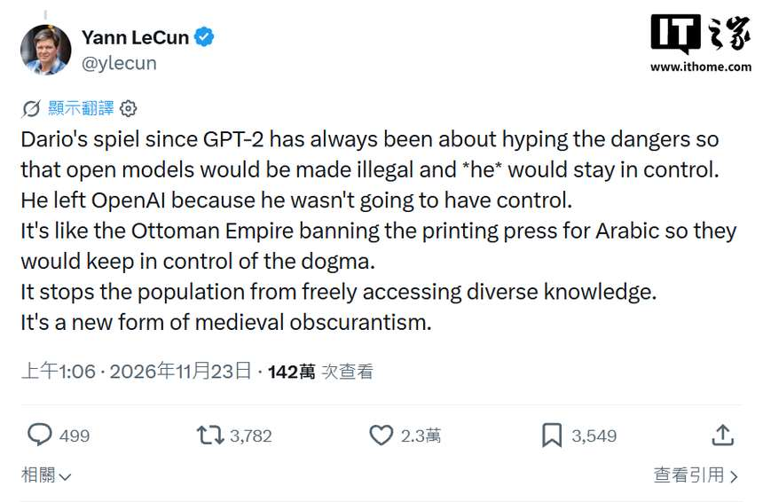
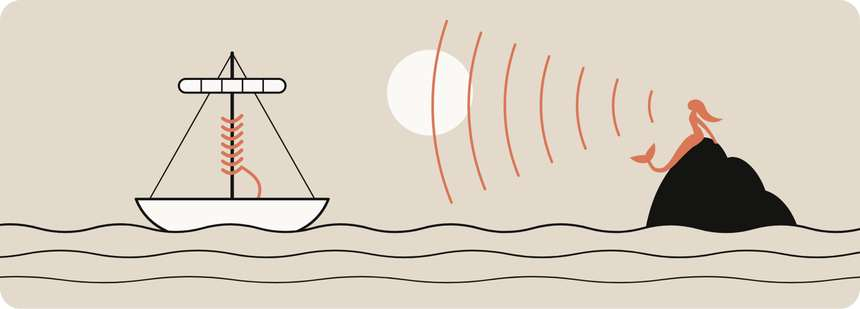
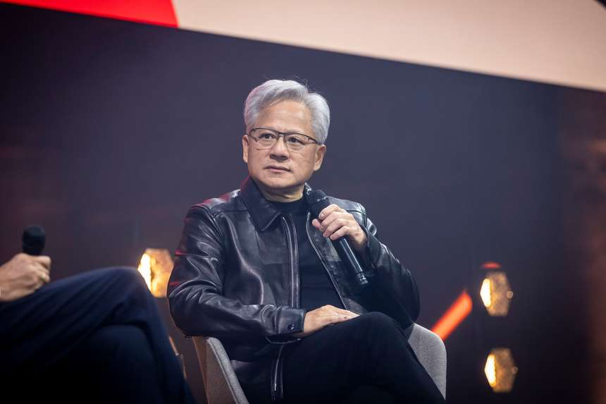
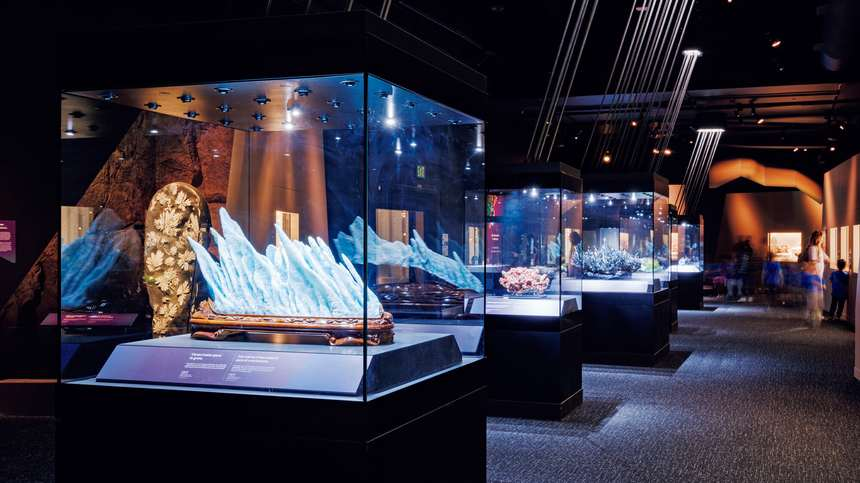
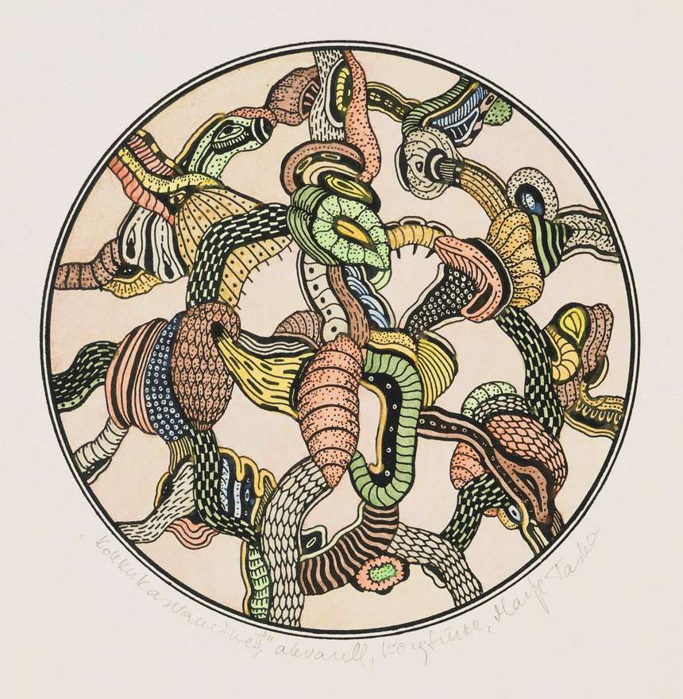
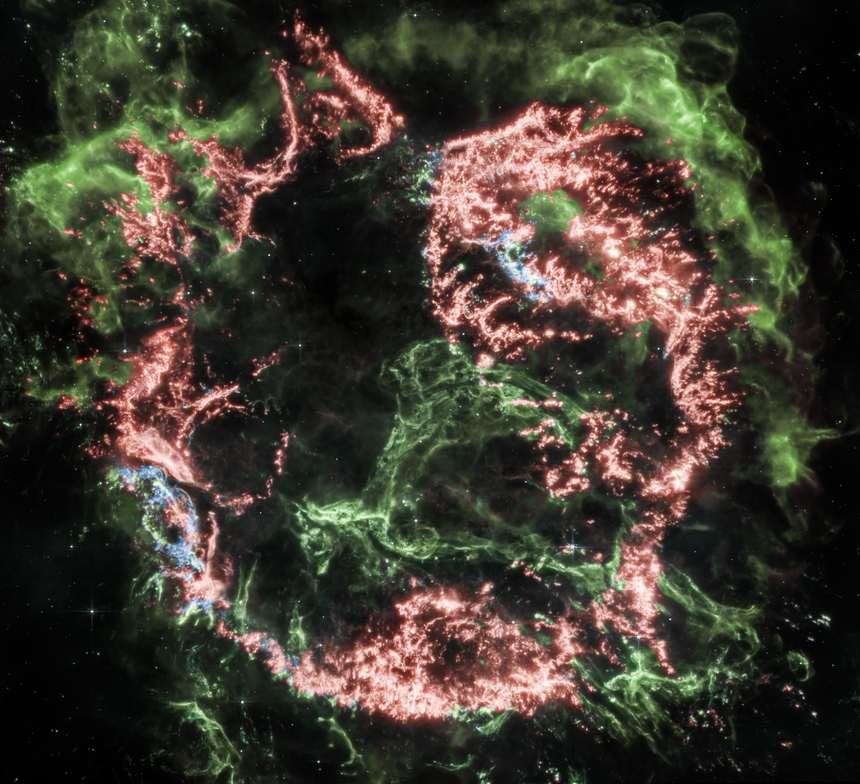
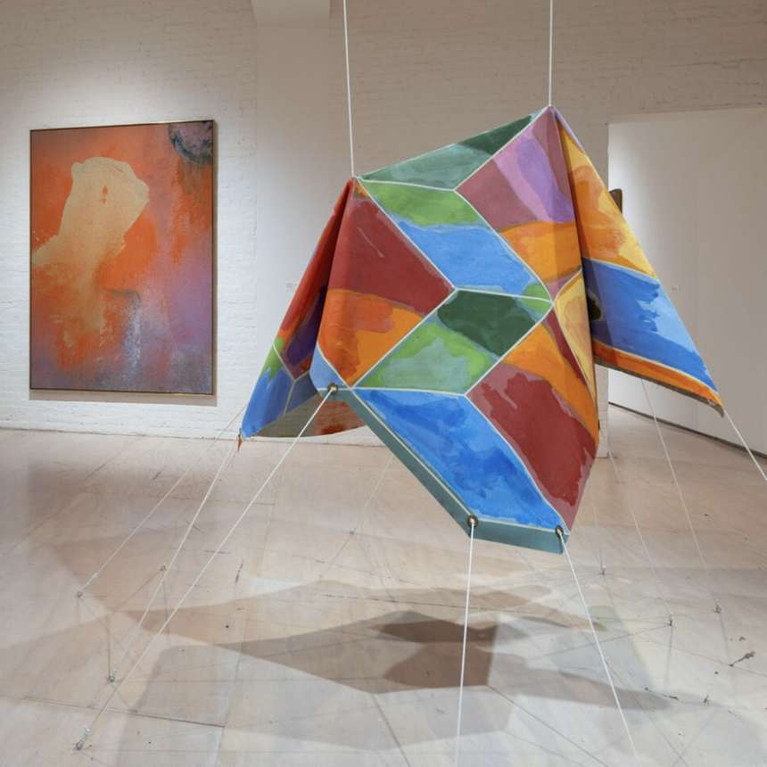

iOS 27 实测：邮件新增四项实用功能，信息应用新设置改变 15 年操作习惯
四维 72 ×1.15 ×1.15 Tier 0≈ 83
iOS 27 为 Apple Mail 带来四项实用新功能；信息应用的新设置则打破了 iPhone 十五年来的操作习惯，9to5Mac 上手实测。
💡 点评：iOS 27 这轮改动有意思的地方在于「敢动肌肉记忆」：用了十五年的交互说改就改，说明苹果判断 AI 时代的信息应用需要重新组织，而不是继续堆功能。
9to5Mac编者按：本份为每日两报新一期午报，覆盖昨天 18:00 ～ 今天 11:00。全页最高分是今日精选：黄仁勋复职后首次主持全员大会，向员工道歉并承诺调整管理风格（80）。GitHub 当日热榜 16 仓与前两日完全同榜：新面孔 5 仓（CLI-Anything、nginx、openvino、diagram-design、Ghost-Downloader-3）经复查窗口内均无新发版（nginx 最新 release 仍为 11-23 15:39），开源章空章。Tier 0 四家仅 Apple 有节点（iOS 27 邮件与信息新功能实测），Sony / DSH / 国内个人助手均无窗口内新节点。促销新标准（v2.5 §4-3）：命中促销/导购 26 条（黑五导购清单、国补价键盘/显示器/空调、各平台礼品指南等）−10 不乘系数后低于 70，全部丢弃不上页。出卡口径（评分标准 §3）：每主题前 3 名 + 全部 ≥84 出卡；锚点沿用 t-<主题>/c-<主题>-<序号> 新命名。
Tier 0 其余三家：Sony（本期无更新：窗口内无产品与政策新节点）；DSH（本期无更新：窗口内未见新发版与新节点）；国内个人助手（本期无更新：豆包 / 灵光 / 千问 Go! / 腾讯小微窗口内均无新节点）。
iOS 27 为 Apple Mail 带来四项实用新功能；信息应用的新设置则打破了 iPhone 十五年来的操作习惯，9to5Mac 上手实测。

黄仁勋复职后首次主持全员大会：感谢 CFO 克雷斯代管公司，否认特朗普「救场」说法，公开向员工道歉并透露正接受心理治疗，承诺调整往日的强硬管理风格。

神舟二十四号载人飞船发射取得圆满成功，与火箭成功分离进入预定轨道；汤洪波三赴「天宫」，任务首次开展中外联合飞行，巴基斯坦载荷专家短期驻留。

杨立昆公开怒怼 Anthropic CEO 阿莫迪，称其炒作 AI 危险论的真实目的是让自己掌握控制权。

Anthropic 推出 Siren 蜜罐系统，主动诱导测试 AI 智能体的越界行为；测试显示新一代 Claude 仍有 21~32% 的触发率。
宝马新世代首款国产车型 iX3 上市交付：26.99 万元起，全域 800V 架构配合 Momenta R7 智驾方案。
波音时隔九年再获中国客运航司大单：厦航 50 架 737-8 订单敲定，目录价 74 亿美元。
Firefox 161 发布：经典主题回归，安卓版新增「听网页」能力。

Vogue 从黄仁勋复职后依旧穿着标志性棉外套出席全员大会切入，讨论这件「战袍」在危机公关中的符号意义。
Harper's BAZAAR 回顾 163 Mercer 地下室——2000 年代纽约时尚圈最具传奇色彩的聚会地，以新书与宝丽来照片的形式重现。
Geri Halliwell 的「Dark Honey」深蜂蜜棕发色被视为今冬最显贵的新发色范本。
MAD 建筑事务所的 Fenix 移民博物馆建成亮相：鹿特丹百年仓库改造，以盘旋而上的「燕鸥」观景台致敬移民历史。
BRUTUS 专文梳理劳力士与电影工业数十年的深度绑定：从腕表入镜到电影节赞助，「时间的艺术」如何成为品牌叙事资产。

LA 发起的 fine mineral 展览『Unearthed：Raw Beauty』巡回至东京，以艺术馆的展陈方式鉴赏天然矿物晶体。

Cultured 操刀迈阿密海滩巴塞尔艺博会指南：精选一万美元以下仍值得入手的 10 件作品。

NASA 韦布望远镜发布超新星遗迹新影像，揭示恒星死亡现场更精细的结构细节。

MoMA PS1 新展「Hard Art」系统梳理黑人抽象艺术的发展地形，评论称其填补了抽象叙事长期缺席的一块版图。
数毛社（Digital Foundry）实测《GTA 6》主机版本性能排序：PS5 Pro 体验最佳，Xbox Series X 次之，PS5 垫底。
技术玩家展示《GTA 6》在 Windows 环境下运行的画面，PC 版缺席下的民间移植实验再引热议。
CDPR 宣布已与索尼 PlayStation 达成《巫师 4》营销合作，主机阵营站队明朗化。
国铁普速、旅游列车车次今日起变更：原 T 字头调整为 N 字头，原 K 字头及纯数字列车调整为 V 字头，影响全国普速出行车次查询习惯。